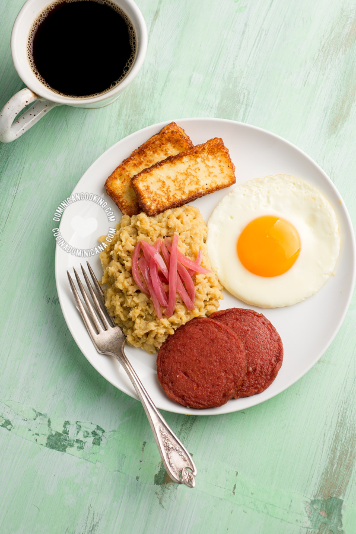

El Mangú es uno de los platos más queridos de los dominicanos, base de "Los Tres Golpes", el desayuno más
completo y complejo de nuestra gastronomía. Elegi esta receta por q es un platillo basico de la republica
dominicana y por q me gusta.

-Ingredientes
4 plátanos verdes
1 ½ cucharadita de sal
4 cucharadas de mantequilla o aceite de oliva (ver notas)
½ taza de agua a temperatura ambiente
-Pasos
Pelar plátanos: Pela los plátanos (ver como). Corta en octavos (dos mitades, luego las mitades en cuartos).
Remueve la parte central del plátano donde están las semillas (opcional)
Hervir plátanos: Hierve los plátanos en agua, a la que has agregado la sal, hasta que estén muy blandos.
Retira del fuego.
plátanos: Maja los plátanos recién sacados del agua con un tenedor (cuidado de no quemarte). Agrega
mantequilla (o aceite de oliva) y mezcla bien. Agrega el agua fría y mezcla hasta que tengas un puré
bien suave.
sirve con la compaña q deses y listo
Esta receta fue copiada de la pagina www.cocinadominicana.